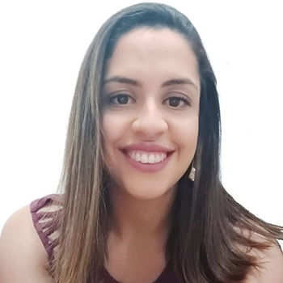

Hoje, 31 de agosto, Dia do Nutricionista, convidamos Bruna Sousa para um bate papo sobre o trabalho da Nutrição do Esporte e as possibilidades de trabalho em conjunto com a Psicologia do Esporte. Confira!

ABRAPESP – Oi Bruna, agradecemos o seu aceite a nosso convite. Gostaria de te pedir para iniciar se apresentando para gente.
Bruna Sousa – Meu nome é Bruna Sousa, sou nutricionista formada há onze anos e há onze anos trabalho com atendimento nutricional. Tenho especialização em “Tratamento Multidisciplinar da Obesidade” e também em “Fisiologia do Exercício” ambos pela Universidade Federal de São Paulo (UNIFESP). Também sou cineantropometrista nível II pela International Society for Advancement of Kinanthropometry (ISAK). Atualmente trabalho com as equipes de rendimento do SESI São Paulo, já atuei com Voleibol, Basquete masculino e feminino, Triatlo e Atletismo olímpico e paralímpico.
ABRAPESP – Conta um pouco para gente de onde surgiu seu interesse em trabalhar na área de nutrição esportiva.
Bruna Sousa – Assim que me formei, comecei os atendimentos nutricionais, e meu interesse pela nutrição esportiva se deu quando percebi que dentre os meus pacientes, o resultado e o engajamento no processo nutricional eram muito maiores quando eles tinham um objetivo competitivo. Eu atendia em academia, e quando o paciente tinha apenas o objetivo estético, na maioria das vezes ficavam desmotivados no meio do processo, enquanto os pacientes com objetivos competitivos – como uma corrida de rua para um atleta amador – eles tinham mais motivação e davam continuidade ao processo. Assim, eu me sentia muito mais realizada por meio da realização daquele aluno. Nessas situações eu via motivo no meu trabalho, conseguia ver os resultados de forma palpável, então, acredito que essa tenha sido minha maior motivação para trabalhar com esporte de rendimento.
A partir daí, me dei conta de que a nutrição esportiva era o que eu queria, porque diferente de outros profissionais que conheço, que trabalham com nutrição esportiva por terem sido atletas, essa não era a minha realidade. Então descobri dentro do atendimento nutricional que eu também era competitiva e gostava de ter esses resultados, e no meu caso, por meio da performance de outra pessoa. A partir dessa decisão, fui buscar mais informação a respeito do que a vivência não me trouxe em relação ao esporte, e busquei por meio de especializações, aprimoramentos e estágios em clinicas e escolas para conseguir conviver com outros atletas e entender a realidade deles.
ABRAPESP – Na sua opinião, qual ou quais os principais objetivos de um nutricionista do esporte quando atuando? Os objetivos ou a forma de atuar mudam quando trabalhando em uma instituição ou no consultório?
Bruna Sousa – Os principais objetivos são promover uma alimentação que atenda às necessidades calóricas e de nutrientes condizentes com a realidade deste atleta, levando em consideração a modalidade praticada, a fase do desenvolvimento do atleta e alinhar a alimentação e suplementação de acordo com a fase de treinos e calendário de competição também. E nesse processo todo, prezar pela saúde do atleta, incluindo a questão de como ele se relaciona com esse alimento, para que isso não seja um peso, que exista o prazer na alimentação e que seja algo que possa incorporar para a rotina dele, pois ele vai fazer isso por um longo período de tempo.
Em relação ao atendimento, em instituição e no consultório, o objetivo da nutrição continua sendo o mesmo, mas acredito que a forma de trabalhar realmente muda, porque na instituição estamos lidando com outros profissionais atuando com esse atleta, e também com as próprias regras, visão e objetivos institucionais, além da forma como a instituição enxerga o desenvolvimento no esporte. Acho que o grande desafio é conseguir conciliar os objetivos individuais da área com os objetivos de outros profissionais e da instituição. Se todos estiverem alinhados, acredito que inclusive possa potencializar o resultado para o atleta, porque temos tem um limite de atuação no consultório. Por mais que eu possa fazer o mesmo trabalho nutricional, eu não tenho a visão do técnico a respeito daquele treinamento, eu tenho a fala do atleta de como ele se sente, mas não sei se o técnico enxerga a mesma coisa que ele enxerga a respeito dele, não sei se o psicólogo enxerga a mesma coisa que ele me diz, se tem alguma coisa a mais para somar. Então, no consultório a atuação fica mais limitada. Desde que a gente se alinhe dentro da instituição, isso fica mais abrangente e muito melhor para o atleta. Esse alinhamento é a chave, se não tiver, pode ser que o desempenho seja prejudicado, logo, no consultório é possível ter mais resultados do que se estiver em uma instituição que não tenha essa conversa, esse alinhamento de demandas, que eu não consiga ter essa troca com outros profissionais.
ABRAPESP – Você já teve oportunidade de trabalhar em equipes esportivas que tinham também psicólogo do esporte? Como foi sua experiência?
Bruna Sousa – Sim, tive oportunidade no SESI porque a instituição conta com uma equipe multidisciplinar para atender os atletas tendo nutricionistas, psicólogos, médicos, fisioterapeutas, biomecânicos do esporte… e sempre é muito bom trocar experiências com outros profissionais. A experiência com a psicologia especificamente é muito bacana porque tem um limite da atuação da nutrição onde eu não posso intervir. Ter o psicólogo neste momento para trabalhar algumas crenças, para entender um pouco o perfil desse atleta e como isso impacta na alimentação é uma troca que é muito vantajosa tanto pro atleta quanto para meu crescimento profissional também.
ABRAPESP – Você vê conexões entre o trabalho da Nutrição do Esporte e a Psicologia do Esporte?
Bruna Sousa – Sim, acredito que as duas áreas se conectam, e, principalmente porque o ato de se alimentar não é puramente fisiológico, permeia como a pessoa se sente e o que ela acredita em relação a aquela alimentação. Então, com base no que ela me conta a respeito dessa alimentação, sei que tem pontos que eu não posso mudar sozinha. Ela precisa entender o porquê ela faz, do jeito que ela faz e através do que ela me relata da nutrição, consigo perceber se ela está com alguma questão que surge como um problema nutricional mas que é muito mais profundo que isso, aparecendo uma desordem nutricional que na verdade precisa ser cuidada por um outro profissional. Então, acho que não é possível dissociar nutrição da psicologia, as duas áreas têm como atuar individualmente e em conjunto com este atleta.
ABRAPESP – Você acredita que uma área pode potencializar a outra? Seria uma relação recíproca entre nutrição e psicologia?
Bruna Sousa – Sim, com certeza, além do fato de que o objetivo principal das duas áreas é potencializar o rendimento do atleta, no caso da nutrição o ato de se alimentar nunca será só fisiológico, ninguém se alimenta somente porque precisa ir treinar ou porque precisa recuperar. A alimentação e o jeito que esse indivíduo se alimenta tem relação com crenças, com hábitos construídos durante a vida, durante a infância e também com o significado que esse indivíduo atribui àquele alimento. Muitas vezes no consultório de nutrição percebo que o atleta/paciente não consegue mais evoluir em relação a conduta nutricional porque aquele alimento tem um significado. Fazer a alimentação daquela forma (que sei que trará resultados positivos) mas para ele tem um significado de punição. Ele associou se alimentar daquela forma como punitiva e não consegue evoluir, esse é um exemplo de que como a psicologia pode mudar essa crença do atleta e fazer ele enxergar essa alimentação de outra forma para conseguirmos evoluir juntos até o objetivo final.
Também tive relatos de colegas psicólogos, de que a nutrição contribuiu muito para o trabalho deles no sentido de ser uma porta de abertura para atuar com aquele atleta. Porque muitas vezes o atleta tem dificuldade de buscar o psicólogo ou tem aquela crença de que isso não é ideal para um atleta, tem aquele mito do herói que ele não pode ser frágil, mas que buscar um nutricionista é normal porque vai de encontro com o que o esporte espera dele: que ele cuide do físico. E muitas vezes durante minha atuação, quando eu percebia o limite da atuação nutricional e identificava o potencial da intervenção do psicólogo, eu comentava com o atleta a possibilidade, pedia permissão para para abrir a situação com o psicólogo, e isso abria uma porta para que esse psicólogo atuasse não só com aquela questão, mas com muitas coisas para tratar ali também. Então eu acho que as duas áreas se complementam quando a gente consegue interligar as duas.
ABRAPESP – Conta pra gente alguma situação de atuação em conjunto e/ou complementar.
Bruna Sousa – A atuação do psicólogo do esporte foi fundamental em momentos que eu tive que lidar com atletas com transtornos alimentares e comer transtornado ou com distorção da imagem corporal e que isso repercutia na alimentação de uma forma negativa a ponto dele não se alimentar de acordo com o que o esporte precisava, podendo deixar ele mais suscetível a lesões, a um baixo rendimento e a prejuízos a longo prazo. O papel do psicólogo foi fundamental para que ele enxergasse o motivo dessa alimentação ser daquela forma e de conseguir mudar. Também tive muito apoio dos psicólogos que eu já trabalhei para entender qual era a estrutura de entendimento do atleta. Tem atletas que funcionam super bem quando você explica todo o mecanismo do porquê que você está fazendo cada coisa, tem atletas que você precisa ser prático. O psicólogo consegue entender muito mais do que a gente qual é esse perfil. E falando a linguagem que é mais alinhada a do atleta, nós conseguimos resultados mais rápidos e mais duradouros.
ABRAPESP – Gostaríamos de agradecer muito sua participação. E para encerrar nosso bate papo, qual recado você gostaria de deixar para os psicólogos do esporte?
Bruna Sousa – Eu que agradeço o convite e a oportunidade de falar sobre a minha atuação e o trabalho em conjunto com psicólogos. E agradeço também aos psicólogos com quem eu tive oportunidade de trabalhar, que pudemos chegar mais longe, podendo dividir as funções dentro dos nossos limites de atuação. Desejo que essa parceria seja uma possibilidade para mais e mais profissionais, em prol dos atletas e pacientes.